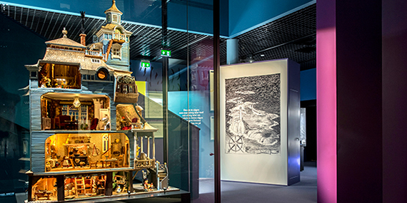
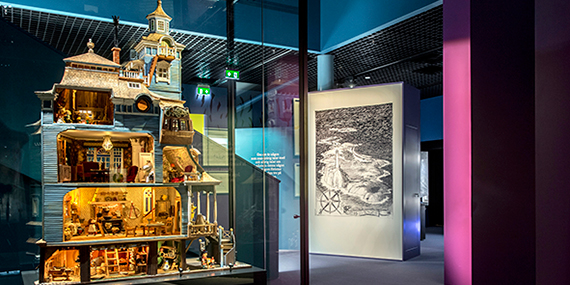
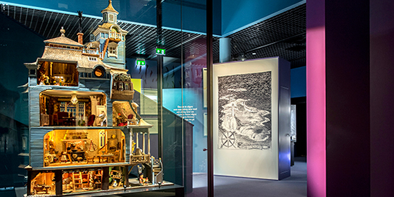

The world’s only Moomin Museum
in Tampere, Finland!
2018: Tue-Fri 9am-7pm, Sat-Sun 11am-6pm. 2019: Tue-Wed 9am-5pm, Thu-Fri 9am-7pm, Sat-Sun 10am-5pm, closed Mon / Adults 12€, children 6 € / Tampere Hall, Yliopistonkatu 55, Tampere, Finland
Exhibitions

What Happens Next?
Where did the ancestors of the Moomins live? What was Moominpappa’s stormy youth like? What do Hattifatteners do during a thunderstorm? These and many other secrets are revealed in What Happens Next?.
The Moomin Museum’s first permanent exhibition retells the entire story of the Moomins, starting from the Great Flood and the mad midsummer’s floating theatre to the puzzle of the lighthouse and the mysterious disappearance of the Moomins one grey November day
Fairytale Cabin
Fairytale Cabin – The Illustrations of Usko Laukkanen 15.12.2018 – 31.3.2019 in the Observatory.
06/01/2019
Christmas decoration workshop
Come and make your own decoration for the Christmas tree in Moomin style! Workshop open every day from noon to 4pm until 6th January [...]
News
Don't hibernate!
You are invited to attend English readings of The Fir Tree at 3 pm during opening hours from 27.12.18 to 6.1.2019.
01 / 12 / 2018
Christmas decoration workshop
The Moomins didn't know what Christmas is, so they decorated the Christmas tree in their own way. In the Studio you too can make a decoration for your tree in your own style. The Christmas decoration workshop is open every day from noon to 4pm until 6th January. Merry Christmas!
All things are so very uncertain and that's exactly what's makes me reassured.
Too-ticky, Moominland Midwinter
Tampere Hall Shop
The shop is open to museum guests and all visitors at Tampere Hall. The range includes exciting Moomin souvenirs, design and music, books written and illustrated by Tove Jansson, Tampere souvenirs, and classic Finnish design brands.
You will additionally find hand-made crafts by Finnish designers as well as music by the Tampere Philharmonic Orchestra, which is also based at Tampere Hall. Here you can buy Moomin postcards and stamps and have your letters stamped with a special Moomin postmark.
‘Well, it’ll be another nice long day tomorrow,’ said Moominmamma. ‘And it’s all yours from beginning to end. Now isn’t that a lovely thought!’
Moominmamma, from Moominpappa at Sea
Take a seat and enjoy a quiet moment with one of Jansson’s books in the Moomin Museum Reading Room. In our Reading Room you will find Moomin books in over 20 languages, along with other books by and about Jansson. The collection features historical rarities and fresh copies of every new Moomin edition.
MOOMIN MUSEUM
Tampere Hall
Yliopistonkatu 55
33100 Tampere, Finland
+358 3 243 4111


 
